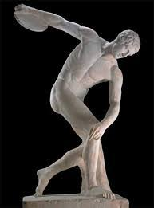

-DEPORTES-
Grecia es el lugar del nacimiento de los Juegos Olímpicos, celebrados por primera vez en el 776 a. C hasta su prohibición en el 393 d. C. El estadio Panathinaikó en Atenas, que fue esencialmente reconstruido en 1895, fue la sede de los primeros Juegos Olímpicos modernos en 1896. El estadio Panathinaikó también fue la sede de los juegos de 1906 y albergó algunos eventos de los Juegos de 2004.

Los dos deportes más practicados en Grecia son el fútbol y el baloncesto.344 En 2008, la selección de fútbol de Grecia llegó a ocupar la octava posición en la Clasificación mundial de la FIFA,345 y causó polémica al ganar la Eurocopa 2004. La Super Liga de Grecia es la máxima liga de fútbol profesional y comprende dieciocho equipos, de los cuales los más exitosos son Olympiacos, Panathinaikos y AEK Atenas.
La selección de baloncesto de Grecia es considerada como una de las mejores en el mundo, pues en 2012 se colocó en el número cuatro del ranking internacional de la FIBA y en el segundo lugar de la clasificación europea. Ganaron el campeonato europeo en 1987 y 2005, y han terminado entre los cuatro mejores en dos de los últimos cuatro campeonatos mundiales. La liga nacional de baloncesto, A1 Ethniki, está conformada por catorce equipos. Los más exitosos son los Olympiacos, Panathinaikos, Aris Salónica y AEK Atenas. Los equipos griegos han sido los más exitosos en el baloncesto europeo de los últimos 25 años, pues ganaron nueve Euroligas desde 1988.
Otros deportes populares en el país incluyen el polo acuático, el voleibol, el atletismo, el levantamiento de peso, el boxeo y la gimnasia.El tenis y el golf, que fueron introducidos en el siglo XIX por la clase burguesa, aún atraen a un gran número de jugadores. El críquet y el balonmano son muy practicados en Corfú y Véria, respectivamente.